Pando, oficialmente Departamento de Pando, es uno de los nueve departamentos de Bolivia, ubicado al norte de Bolivia. Limita con el Brasil al norte y este, al oeste con el Perú, al sur con los departamentos de La Paz y del Beni. El departamento tiene un relieve mayormente llano y posee una altitud media de 280 metros s.n.m. Posee un clima tropical y está cubierto por la selva de la Amazonia y surcado por innumerables ríos. Los suelos bajos se caracterizan por frecuentes inundaciones que afectan gran parte de las tierras durante varios meses al año.
Gran parte de las comunicaciones terrestres se utilizan solo durante el período seco (junio a noviembre), mientras que durante el período lluvioso los transportes se deben realizar por vía aérea, o en menor grado por vías fluviales.
Su capital es Cobija. Cuenta con una población aproximada de 61 mil habitantes. El departamento de Pando está dividido en 5 provincias, Nicolás Suárez, Manuripi, Madre de Dios, Federico Román, Abuná y 15 municipios.
Economia
Actualmente Cobija depende más de la minería del oro y de la producción de almendras, la mayoría de lo cual se vende al Brasil. Se ha establecido la presencia de oro, litio, cinabrio, ilmenita, bauxita, columbita, piedras preciosas y semi preciosas.
El clima del departamento de Pando por las características propias de la zona tropical cuenta con cultivos de: maíz, cacao, café, yuca o mandioca, arroz, frutas tropicales, legumbres y hortalizas.
Gracias a la fertilidad de sus tierras la ganadería es una actividad importante para los habitantes de la región. En cuanto a la pesca, los ríos son hábitat de una gran variedad de peces como él; pacú, surubí, dorado, palometa, sábalo, bagre y blanquillo.
Recursos Hidricos
El departamento de Pando es una región con un alto nivel de precipitación, 1865 mm en promedio (entre 143 y 1990) con un máximo de 2423 mm (1972) y un mínimo de 1298 mm (1963). La estación lluviosa se extiende de octubre a abril, y la estación seca tiene su mínimo de lluvia en julio. Las aguas superficiales abundad todo el año, pero son de calidad variable.
El río Madre de Dios y el río Tahuamanu, ambos afluentes del río Beni, curso alto del río Madera, que pertenecen a la gran cuenca del Amazonas, constituyen las principales fuentes de aguas superficiales. Para el abastecimiento de agua potable, la ciudad de Cobija se abastece desde el arroyo Bahía, en la frontera con el Brasil.
Los ríos del departamento de Pando corresponden en su integridad a la cuenca del Amazonas los principales son: el Acre, que hace frontera con el Brasil, el Orthon que nace de la unión del Manuripi con el río Tahuamanu, Madre de Dios que nace en el Perú con el nombre de río Manu, hace frontera con el norte del departamento de La Paz Buyumanu Karamanu, el Mapiri o Manu, Manurime, Genechiquia, Chipamanu hace frontera con el Brasil y el Abuná. El río madera, no es navegable debido a que sus aguas caen en repetidos sitios llamados cachuelas. Las cachuelas comienzan en Guayaramerín sobre el río Mamoré y se prolongan hasta Porto Velho. Venga visitar pando.
LA PAZ
Nuestra Señora de La Paz es una ciudad y municipio del oeste de Bolivia, capital del departamento de La Paz, sede del Gobierno boliviano y de los Poderes Legislativos y Ejecutivos; la sede del Poder Judicial y capital del Estado boliviano es Sucre.
Desde el 7 de diciembre de 2014 La Paz es clasificada como una de las nuevas siete ciudades maravillas del mundo.3
El censo de 2001 reportó una población de 789 585 habitantes.1 El área urbana del municipio tiene una variación altitudinal que oscila entre los 3250 metros sobre el nivel del mar y 4100 en sus puntos más altos.4 .Forma junto a las ciudades vecinas de El Alto, Viacha y municipios vecinos, el Área metropolitana de La Paz .
Geografia
La ciudad de La Paz está asentada a las riveras del río Choqueyapu, que la cruza de norte a sur, y de pequeños ríos que nacen en las laderas altas y depositan sus aguas a lo largo del trayecto de este río que desemboca hacia el norte boliviano. En su trayecto por la ciudad se ve altamente contaminado con todo tipo de desperdicios, especialmente industriales, por lo que a lo largo de su rivera, en la ciudad, desprende constantemente desagradables olores.15 En la Cordillera Real (al este de la ciudad) se encuentra el Illimani (6462 msnm), cuya silueta es el emblema de la ciudad desde su fundación.16
El centro de la ciudad está rodeado por barrios que fueron construidos en las laderas periféricas dándole a la ciudad un aspecto de embudo. La mayoría de estos barrios fueron creados por la emigración interna que hubo a finales de los años 60 y principios de los 70 (últimos años de la dictadura boliviana). Esta hizo que mucha gente del campo emigrara a la ciudad buscando un mejor porvenir y así se fueron asentando en los alrededores de la ciudad de La Paz y creándose los barrios periféricos. Hoy día, muchos de ellos, están dentro del programa "Barrios de Verdad" que lleva a cabo el gobierno municipal para mejorar las condiciones físicas y mejorar así la calidad de vida de sus habitantes. Se puede decir que La Paz es una ciudad multicultural donde conviven tanto aimaras, quechuas y mestizos, como personas procedentes de otras partes del mundo.
BENI
El Departamento del Beni es uno de los nueve departamentos de Bolivia, con una superficie de 213 564 km² y una población de 425 780 pobladores (estimado del año 2012). Su capital política es la ciudad de Trinidad. Confina al norte con el departamento de Pando; al noreste y este, con la república de Brasil, al sureste con el departamento de Santa Cruz; al sur, con el departamento de Cochabamba y al oeste, con el departamento de La Paz.
Clima
En el departamento se presenta mayormente un clima tropical húmedo, con una precipitación media anual entre 1000 y 4000 mm. El ambiente es caluroso en general. La temperatura promedio oscila entre 28 y 35 °C. En ciertas temporadas, el territorio es surcado por vientos fríos del sur que producen descensos bruscos de temperatura. Estos vientos son conocidos como «surazos».
COCHABAMBA
Cochabamba es una ciudad boliviana, capital del departamento de Cochabamba y de la provincia de Cercado, siendo en la actualidad la tercera ciudad en importancia económica de Bolivia.3 Se encuentra situada en el centro del país, localizada en el valle del mismo nombre.
Tiene una población de 1.113.474 habitantes en el área metropolitana (Censo 2012),4 perteneciendo al área metropolitana los municipios de Cercado, Sacaba, Quillacollo, Colcapirhua, Tiquipaya, Vinto y Sipe Sipe.
Cochabamba se encuentra en un valle de tierra fértil y productiva a 2571 m de altura. La ciudad, rodeada por campos de cultivos y valiosos vestigios preincaicos e incaicos, conserva su personalidad virreinal.
Agricultura
La agricultura en la ciudad de Cochabamba era muy importante pero ésta se ha reducido debido a la expansión del área urbana que ha reducido las tierras de cultivo al sur de la ciudad, a la zona de la Maica y la Tamborada. Pero en los mercados de la ciudad se pueden adquirir productos que pueden variar según la zona de donde son traídos:
El Trópico, en esta zona se encuentran principalmente los cultivos de plátano, naranja, mandarina, etc.
Los valles, ésta es la principal zona agricola de Cochabamba, en esta zona hay cultivos de haba, arveja, cebolla, maíz, tomate, locoto, perejil, lechuga, nabo, zanahoria, chirimoya, frutilla, durazno, etc.
Subyungas, en esta zona se encuentran cultivos de haba, arveja y papa principalmente.
ORURO
Oruro es una ciudad y municipio boliviano, capital del Departamento de Oruro y de la Provincia de Cercado. El municipio tiene una población de 264.943 habitantes según los resultados del Censo Nacional de Bolivia 2012.3 4 A una altitud de 3.735 msnm, es considerada entre las ciudades más altas del mundo. El nombre de Oruro es una derivación de Uru Uru (ururu). Los urus son un pueblo establecido en el actual territorio boliviano antes del Incario.5 El año 2001, la Unesco declaró al Carnaval de Oruro, que en sí es la fiesta de la Virgen del Socavón, "Obra Maestra del Patrimonio Oral e Intangible de la Humanidad"; reconociendo así el valor religioso y cultural que expresa esta festividad a través de la música y la danza.6
Turismo
El Carnaval de Oruro es conocido y famoso a nivel mundial. Fue declarado Obra Maestra del Patrimonio cultural de la Humanidad por la UNESCO el año 2001. En 2008 la Unesco inscribió al Carnaval en la Lista Representativa del Patrimonio Cultural Inmaterial de la Humanidad.6 Incluso antes del carnaval propiamente se viven los preparativos del mismo, con una serie de fiestas previas denominadas "convites" e invitaciones a las personas pudientes para que cooperen con los festejos, trajes, bandas, etc. En esta festividad, que se celebra desde la época colonial hay una expresión de fusión intercultural. Vistosos pasacalles y danzas, cada una con sus peculiaridades: diablada, morenada, caporales, tobas, kullawada, tinkus, negritos, pujilay. Pueblo, arte y alegría desbordantes.Durante estas fiestas es prácticamente imposible encontrar alojamiento en los hoteles locales, por lo tanto se recomienda hacer reservas con anticipación.
Al margen del carnaval en si, el Santuario de la Virgen del Socavón es un lugar que vale la pena visitar, también se puede visitar el Museo Arqueológico, el Museo Mineralógico, La Casa de la Cultura Simon I. Patiño en la calle Soria Galvarro y Ayacucho y la calle La Paz que es donde los bordadores confeccionan las originales vestimentas de los danzarines que participan del carnaval.
POTOSI
Potosí ―antiguamente conocida como la Villa Imperial de Potosí― es una ciudad del sur de Bolivia, capital del departamento del mismo nombre y de la Provincia de Tomás Frías. Se extiende a las faldas de una legendaria montaña llamada Sumaj Orcko (en quechua: ‘Cerro Rico’), en la cual se situó la mina de plata más grande del mundo desde mediados del siglo XVI hasta mediados del siglo XVII.
Según las proyecciones del Instituto Nacional de Estadística de Bolivia, su población llegaba a 170 000 habitantes en el año 2011. Su altitud promedio es de 3900 msnm, por lo que es, entre las ciudades de más de 100 000 habitantes, la segunda más alta del mundo detrás de El Alto, aunque esta última se encuentra aglomerada a La Paz, de menor altitud que Potosí.
Historia
Se conoce que Potosí nació como «asiento minero» sin un plan preestablecido, en un paraje de accidentada topografía; el fin, la explotación de los recursos naturales o yacimientos argentíferos del cerro rico.
Por el mes de septiembre de 1545, había en Potosí más de 170 españoles y 3000 indios. Un año después estaban edificadas 94 casas, para las cuales se les había señalado sitio en los parajes más secos «y así en espacio de 18 meses se hicieron más de 2500 casas para más de 14 000 personas que entre españoles e indios había».
Todos creyeron que sus riquezas, como las de otras minas, no fuesen permanente, en menos de un quinquenio Potosí había crecido excesivamente, casi inmediatamente los pobladores pidieron a la corona convertirla en villa.
Reinaba por entonces Carlos I de España más conocido como Carlos V de Alemania. Siendo Emperador de Alemania, en 1516 al morir su abuelo Fernando el Católico adquirió el trono de España, su madre Juana de Castilla o «Juana la Loca» como así se la conocía, fue excluida de la sucesión por demencia.
SANTA CRUZ
El Departamento Autónomo de Santa Cruz es un departamento boliviano situado en el tercio suroriental del país. Es la entidad subnacional más extensa de Hispanoamérica y de Bolivia con 370 621 km²; (33,74 % del territorio nacional), y cuenta con 2,6 millones de habitantes (2012).1 Limita al norte con el Departamento del Beni, al oeste con el de Departamento de Cochabamba, al sur con el Departamento de Chuquisaca y la República del Paraguay, al este con Brasil.
Es la región con la mayor tasa de crecimiento económico de los últimos 50 años en Bolivia[cita requerida] y una de las mayores en Sudamérica[cita requerida], representada principalmente por la producción agropecuaria y forestal. Además, es una zona de importante producción hidrocarburífera y potencialmente minera. La capital departamental es la ciudad de Santa Cruz de la Sierra en la Provincia de Andrés Ibáñez.
Clima
Pese a ubicarse en latitudes netamente tropicales y estar la mayor parte de su territorio en altitudes moderadas, el clima es bastante más fresco de lo que a priori cabría suponer. Esto se debe precisamente al predominio de un relieve llano que ofrece escaso obstáculo a los avances de los frentes eólicos, especialmente a los vientos; de este modo existen dos estaciones muy diferenciadas: un verano cálido (como es de suponer en estas latitudes) con temperaturas que rondan los 30 °C y un invierno fresco e incluso hasta en ocasiones bastante frío: en los meses de junio y julio las temperaturas en la ciudad capital -Santa Cruz de la Sierra- suelen bajar de los 10 °C, siendo tal descenso de temperatura ostensible en los horarios nocturnos. De esta manera existen también, aunque menos notorios, un otoño y una primavera, estaciones en las cuales son frecuentes las tormentas y las lluvias; aún en plena estación cálida, época en la que se produce una zona ciclónica -sin que esto signifique tormentas-. Debido a las bajas presiones atmosféricas tras jornadas de calor, se pueden producir irrupciones de vientos procedentes de la Antártida -surazos- con bruscas bajas de la temperatura. Las áreas más septentrionales, más orientales y más occidentales son las más húmedas mientras que el centro y sur del territorio es seco.
Por otra parte en los contrafuertes precordilleranos de los Andes, en el oeste de Santa Cruz, debido a la altitud, el clima es siempre templado (recordar que la temperatura promedio baja 1 °C por cada 80 metros que se asciende), de modo que durante los inviernos en esa zona montañosa son habituales las nevadas.
TARIJA
Tarija, villa originariamente fundada con el nombre de Villa de San Bernardo de la Frontera de Tarixa,1 es una ciudad boliviana al sur del país, capital del departamento homónimo, y capital provincial de la provincia de Cercado. Se encuentra a orillas del río Guadalquivir, o Nuevo Guadalquivir, en el centro de un ameno valle y a 1874 msnm. El municipio tiene una población de 170 900 habitantes (INE 2006), de los cuales el 88,48% está concentrado en la ciudad de Tarija. Esta ciudad es apodada cariñosamente "Tarija la Linda" o La ciudad de las flores.
Clima
El clima de la ciudad de Tarija y el valle en la que se encuentra es llamado "paraíso de la primavera", ya que predomina durante la mayor parte del año un clima templado o mesotérmico, sin embargo durante los inviernos (especialmente durante el mes de julio) la temperatura suele bajar de los 0° C llegando a disminuciones térmicas increíbles para la latitud y altitud (la zona es en los mapas "tropical"): todos los inviernos son fríos; por ejemplo en 1966 se registró en esta ciudad una temperatura absoluta de -9,5 °C (nueve grados y medio bajo cero) y el 20 de julio de 2010 en la misma ciudad de San Bernardo de Tarija la temperatura bajó a - 9, 2 °C (nueve grados con dos décimas bajo cero) acompañada tal temperatura por copiosas nevadas.
Economia
La principal actividad económica del municipio es la industria vitivinícola. Se producen vinos y singanis de gran calidad para el consumo nacional y la exportación. La ciudad tiene también plantas de procesamiento de derivados lácteos, industrias madereras, fábricas de cerámica roja y envasadoras de frutas. La mayoría de estos productos tienen mercados dentro y fuera de Bolivia.
El área rural del municipio abarca un área extensa, con microrregiones en las cuales se desarrolla una actividad agrícola muy diversificada. Además de sus cultivos de vid, tiene cultivos de pepinillo, ajo y flores para el mercado nacional y para la exportación. Tiene hatos de ganado lechero Holstein y granjas avícolas de gran capacidad productiva. Además de las labores agropecuarias, Tarija es sede de hábiles artesanos que fabrican sombreros, cestería y cerámicas.
Tarija tiene una ventajosa ubicación que orienta su actividad productiva hacia la exportación, particularmente a la República Argentina. Su producción agropecuaria se ha visto favorecida con la construcción de la represa San Jacinto, que provee de agua para riego al valle central. San Jacinto también genera electricidad y es un centro de interés turístico.
SUCRE
Sucre es la capital constitucional de Bolivia y capital del departamento de Chuquisaca, siendo la sede de gobierno y capital de facto, La Paz. En Sucre se resume la historia de Bolivia, desde sus orígenes más antiguos.1 2 3 4 5
Antes de la llegada de los españoles, la ciudad de Choquechaca tenía autonomía propia con respecto al Imperio inca (los charcas fueron el único pueblo que no pagó el rescate del cautivo Inca). Según datos del censo 2012, la ciudad cuenta con unos 400.000 habitantes.
Turismo
El urbanismo colonial y la arquitectura republicana que caracterizan a Sucre le valen el título de «Patrimonio Cultural de la Humanidad», otorgado en 1991 por la UNESCO. Es la segunda ciudad en Bolivia que recibe esta distincción después de Potosí (1987). Este hecho propicia la creación del Plan de Rehabilitación de las Áreas Históricas de Sucre (PRAHS, 1995), institución local encargada de la gestión del centro histórico, en colaboración con la Agencia Española de Cooperación Internacional para el Desarrollo (AECID). Se potencia el segmento productivo del turismo cultural histórico y se perfila la idea de un nuevo eje turístico entre Sucre, La Paz y Potosí como iniciativa mancomunada de desarrollo regional, al ser las ciudades más antiguas de Bolivia.
Gastronomia
Sucre cuenta con una gran variedad de platos tradicionales, muchas de los cuales varían según la temporada (mondongo para el Día de Todos Los Santos, picana para Navidad, etc.). Entre los platos más populares y típicos están los chorizos chuquisaqueños, el c'kocko de pollo, el picante de pollo, el mondongo chuquisaqueño, la cazuela de maní y muchos otros. La bebida típica es la «chicha criolla».
Sucre es también famosa por sus numerosas empresas dedicadas a la fabricación de chocolates y bombones14 15 cuyos productos son muy apreciados por los turistas.
 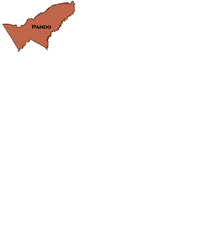
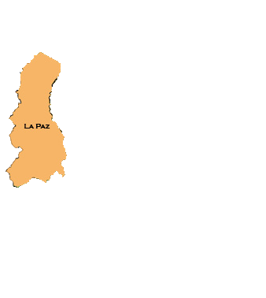
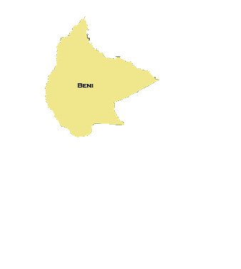
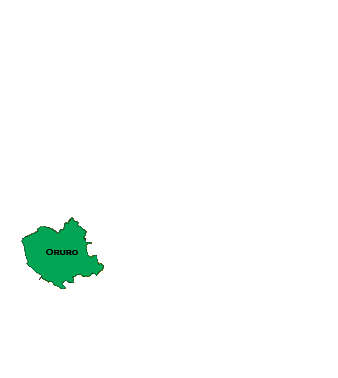
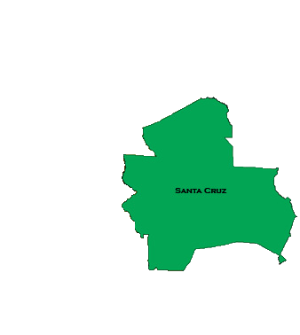
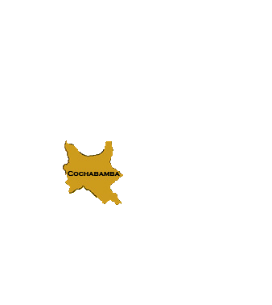
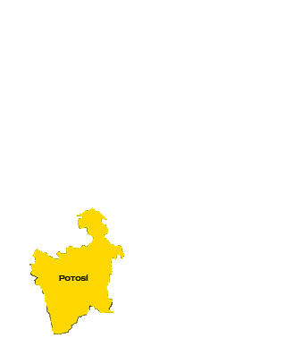
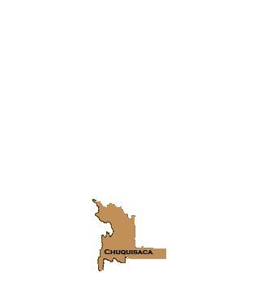
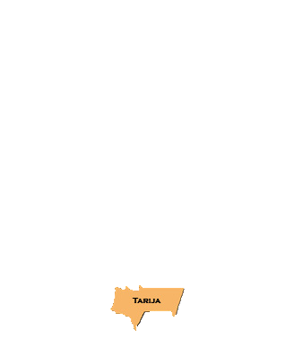
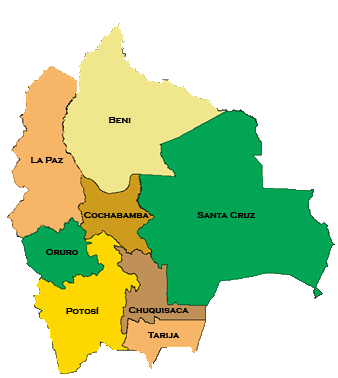
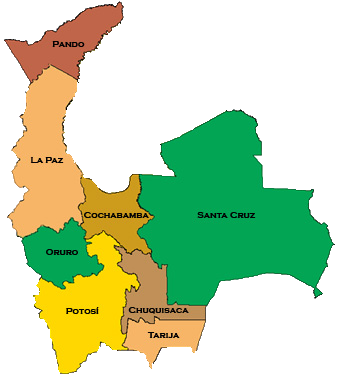
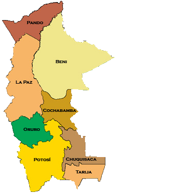
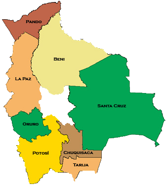
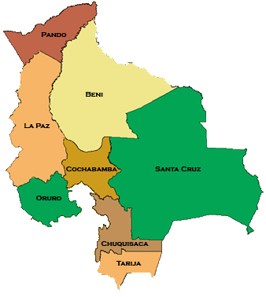
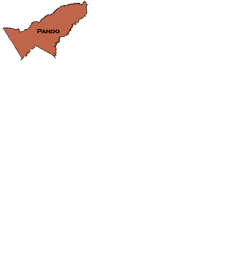
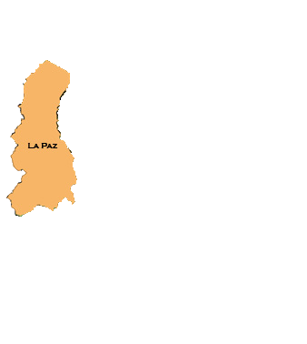
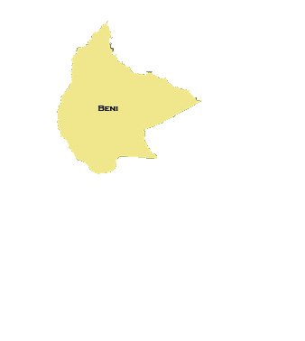
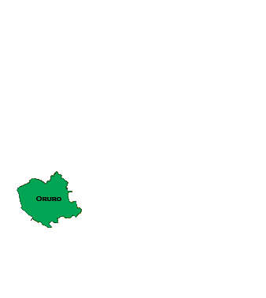
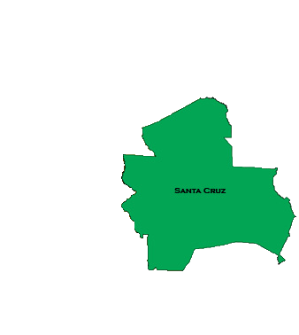
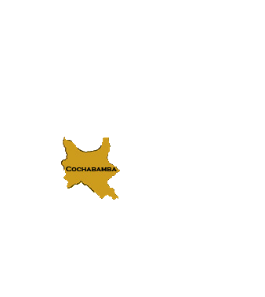
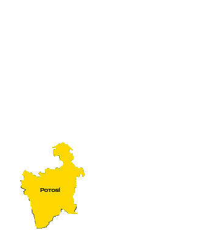
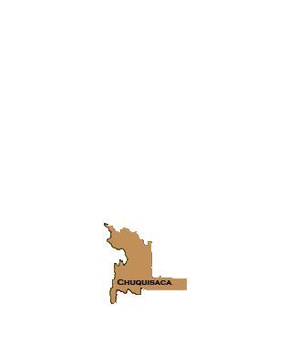
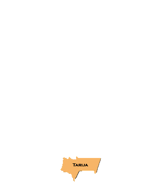
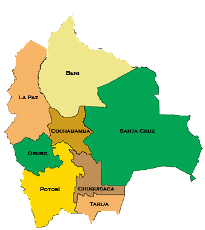
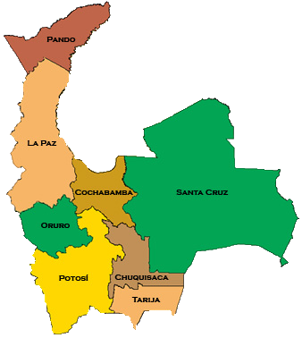
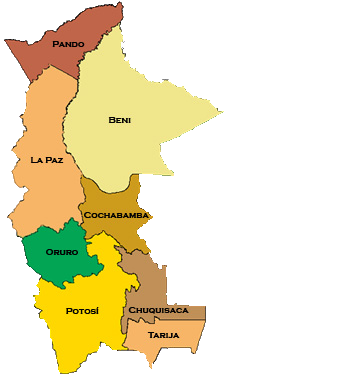
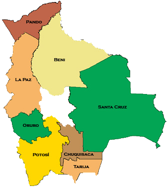
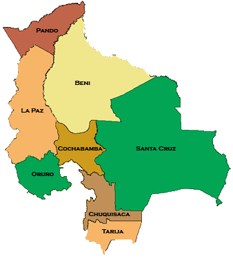